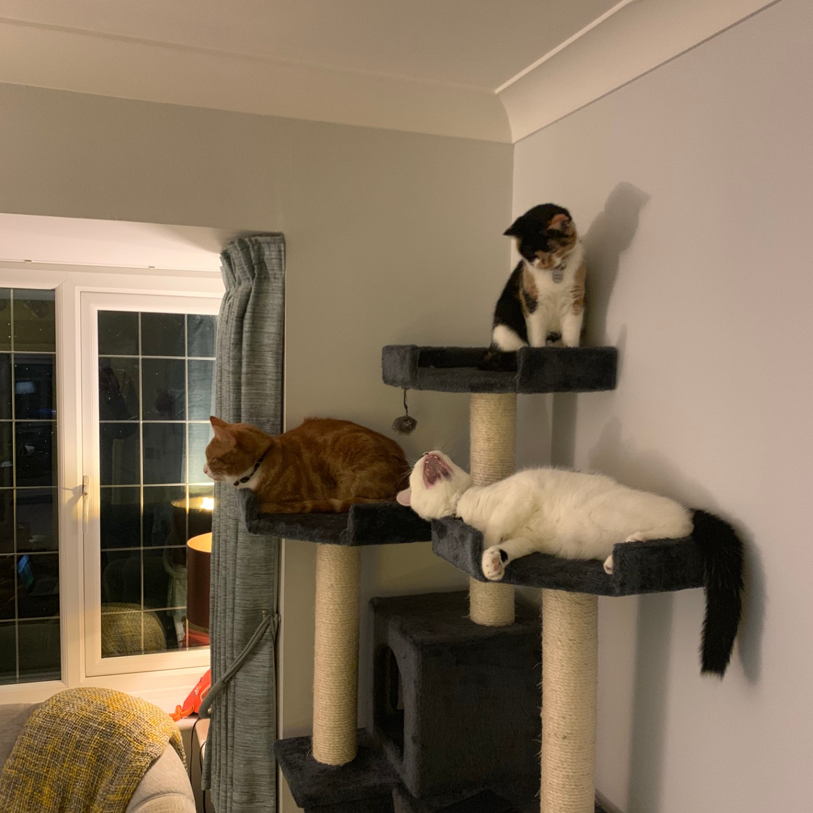
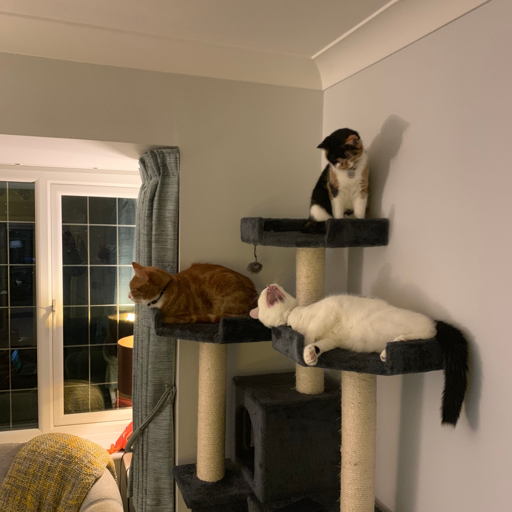

1.5 Describing copyright and other constraints affecting websites:
Alongside GDPR, another important legal consideration is copyright law. Similarly to GDPR, infringement of this law is based on the commercial use or financial reward gained. In this instant it applies to intellectual property, images/video, broadcasts and content. If there is an intellectual property concern within a project, it is important that you make sure that you have the permission of the owner to reproduce, adapt or copy their work. Often this may require purchasing the rights to copy.
Copyright definition:
"The exclusive and assignable legal right, given to the originator for a fixed number of years, to print, publish, perform, film, or record literary, artistic, or musical material."
10) https://www.gov.uk/topic/intellectual-property/copyright
11) https://www.gov.uk/using-somebody-elses-intellectual-property
12) https://www.dictionary.com/
1.6 Describing access issues that need taking into account - describe issues that people with disabilities may face when using webpages and how we can overcome them
When creating websites, we have to be mindful of the user experience and in particular accessibility for people with, visual, auditory, speech and cognitive limitations. Importantly, issues like page contrast, navigation and inclusion of image/video are important to keep in mind.
Using suitable colour schemes to reduce negative impact on colour blindness, giving clear descriptions of images and audio files (for visually impaired or deafness) and including navigation mechanisms that reduce challenges for motor difficulties are all strong considerations.
Limiting potential issues surrounding photo-sensitivity is also important, either through giving ample warning of the occurrence of flashing images to avoid exposing people to them or offering pages that don't include flashing images as an alternative.
13) https://www.boia.org/blog/what-does-the-2017-ict-refresh-mean-for-websites
14) https://www.gov.uk/guidance/accessibility-requirements-for-public-sector-websites-and-apps
1.7 Describe which are the appropriate file types for websites
HTML is the file type for website development. CSS is extremely common though not a necessity. In terms of file types for use on websites, there are a huge range of potentials, categorised as: document, image, video, audio, applications/executables, data and compressed/archive.
File types are either text based or binary. Text based means you can physically read them where binary is only readable by the computer (i.e. images, audio, video)
Some of the potential file types I am likely to include in my website are images: .gif, .jpeg, .png and .tiff
video: .avi, .mpeg, .mov, .qt or .ram
Embedded multimedia: Youtube flash media player
15)https://www.yourhtmlsource.com/starthere/fileformats.html
16) https://websitebuilders.com/how-to/learn-to-download/extensions/
17) https://www.yourhtmlsource.com/images/multimedia.html
18) https://www.ivanexpert.com/blog/2010/05/the-5-types-of-digital-image-files-tiff-jpeg-gif-png-and-raw-image-files-and-when-to-use-each-one//p>
Unit 2, Outcome 1
1.1 Describing the content and layout for each page
layout: All pages: Nav bar within the header, with a changing hover colour and active page. Main heading (H1) is centred - slightly differing font to represent each page theme. A background image, centred and static within body. barring homepage: 2 columns within the body, one for text and one for images. Intended to have text aligned on the least congested area of the screen (less importance of picture) General theme: I thought it would be nice to incorporate my cats in the site as they are named after a number of cultural references that I enjoy. Beyond the homepage, each page is themed around one of my cats and the character they were named from. Page 2: In addition to the above layout, page 2 also has a link to my Trello acount showing some of the tasks I have completed nd how I did it.
 
